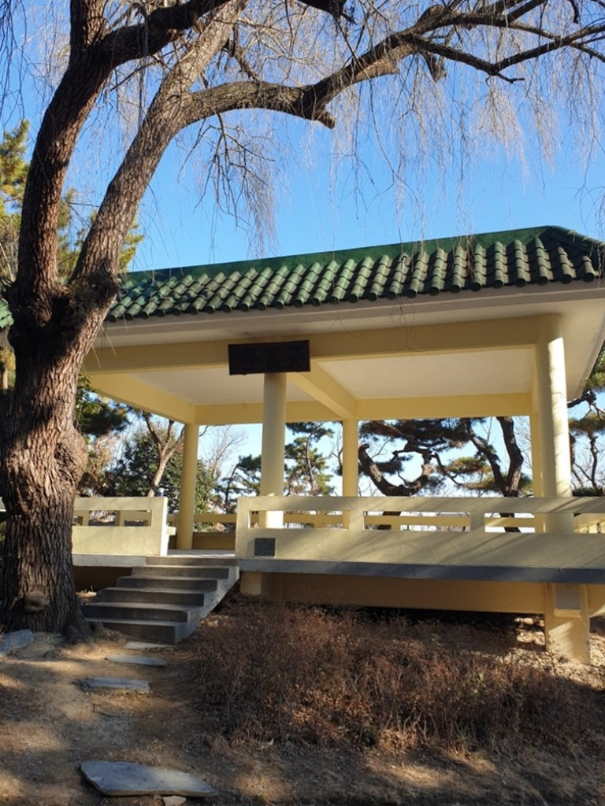

2026 제2회 인문학 기행 · 답사 요록
바다를 읽고, 포항의 역사를 걷다
설화 속 바다의 생업에서 등대와 어업, 오늘의 해안 기록, 전쟁과 도시의 물까지 이어 읽습니다.
자료집 차례
연오랑·세오녀 — 바다로 떠난 사람들과 돌아온 빛
『삼국유사』의 연오랑·세오녀 이야기는 동해 바닷가에서 시작한다. 연오랑은 해초를 채취하다 바위를 타고 일본으로 가고, 세오녀도 남편을 찾아 바다를 건넌다. 두 사람이 떠난 뒤 신라의 해와 달은 빛을 잃는다. 세오녀가 짠 비단을 가져와 제사를 지내자 빛이 돌아왔다는 이야기가 이어진다.
해초를 따는 생업, 바다를 건너는 이동, 비단을 만드는 기술이 한 이야기 안에 들어 있다. 호미곶의 조형물은 이 지역에서 전승되는 설화를 오늘의 공간에 다시 보여 주는 기념물이다. 조형물이 서 있는 곳을 이야기 속 사건의 실제 발생 지점으로 확정할 수는 없다.
바위가 사람을 태우고 이동하거나 해와 달이 빛을 잃는 대목은 설화의 서사이다. 그것을 그대로 사건의 사실 기록으로 받아들이기보다, 바다를 생활과 교류의 공간으로 상상했던 방식과 후대의 지역 기억을 읽을 수 있다. 연오랑·세오녀는 한국사1·국어·지역사 확장 자료로 읽고, 이후의 등대·어업·전쟁·도시 시설은 한국사2의 근현대사 학습과 연결한다.
호미곶등대 — 1908년, 곶에 켜진 불빛
바다 쪽에서 보이는 육지의 끝
호미곶은 영일만의 남쪽에서 동해로 길게 뻗은 곶이다. 육지에서 보면 바다가 넓게 펼쳐지는 전망대이지만, 바다에서 보면 선박이 해안의 방향을 판단하는 돌출부다. 배가 곶을 돌아서면 보이는 해안과 항구의 방향도 달라진다. 낮에는 산의 윤곽과 육지의 모양을 살필 수 있어도 밤에는 그 경계가 어둠 속에 묻힌다. 등대는 이 지형의 한 점을 불빛으로 표시해 선박이 자신의 위치를 가늠하도록 돕는 시설이었다.
호미곶등대는 1908년에 처음 불을 밝혔다. 한국항로표지기술원의 소개에 따르면 붉은 벽돌로 쌓고 바깥을 흰색으로 마감한 약 26미터 높이의 등탑으로, 내부는 여섯 층으로 나뉜다. 철근을 넣은 콘크리트 탑이 아니라 벽돌을 쌓아 올린 건물이라는 점이 특징이다. 창과 출입구의 장식, 층별 천장의 매화무늬에는 기능만으로 설명되지 않는 건축적 표현도 남아 있다. 위층의 빛을 지탱하는 몸체에는 당시의 축조 기술과 장식 취향이 함께 반영되었다.
출전: 한국항로표지기술원, 「11월 이달의 등대 ‘호미곶등대’」, 2021.1.6. 게시
불빛은 물길을 대신하지 않았다
등대의 불빛은 바다 전체를 낮처럼 밝히는 조명이 아니다. 항해자가 알아볼 수 있는 지점과 신호를 제공하는 장치다. 배에서는 불빛이 보이는 방향과 해도에 표시된 위치, 선박의 진행 방향을 함께 이용했다. 물이 얼마나 깊은지, 해안에서 얼마나 떨어져 있는지, 어느 쪽으로 항구에 접근해야 하는지는 등대 하나만으로 해결되지 않았다. 등대는 해도·나침반·다른 항로표지와 결합할 때 제 역할을 했다.
높은 곳에 광원을 두는 까닭도 여기에 있다. 낮은 해안에 작은 불을 켜면 파도나 지형에 가려지기 쉽다. 등탑은 광원을 높여 멀리 있는 선박이 이를 발견할 가능성을 높인다. 그러나 탑을 높인다고 모든 날씨에 같은 거리에서 보이는 것은 아니다. 안개와 비, 공기의 상태, 배에서 바라보는 눈높이도 영향을 준다. 밝기의 문제와 보이는 거리의 문제는 서로 연결되지만 완전히 같지는 않다.
여러 등대가 늘어서 있는 해안에서는 어느 불빛인지 구별하는 일도 필요했다. 불이 켜져 있는 시간과 어두워지는 시간, 일정한 주기로 돌아오는 섬광은 서로 다른 위치를 알리는 약속이 되었다. 회전식 광학 장치는 빛을 모은 방향이 배 쪽으로 향할 때 밝게 보이도록 만들었다. 항해자는 단순히 불빛을 찾는 데서 그치지 않고, 그 반복되는 특징을 바다의 위치와 연결했다.
출전: 미국 국립공원관리청(NPS), 「The Fresnel Lens」; 미국 국립공원관리청(NPS), 케이프해터러스 국립해안 「The Fresnel Lens」
20세기 초 영일만의 바닷길
호미곶에 등대가 들어선 시기는 한반도의 항만과 해상교통이 재편되던 때였다. 1903년에는 팔미도등대가 켜졌고, 이후 여러 항구와 섬에 근대식 등대가 늘어났다. 한편 일본인의 어업 활동과 이주, 기선 운항이 확대되면서 연안의 포구도 더 넓은 시장과 연결되었다. 호미곶등대의 1908년 점등은 이처럼 바다의 이동을 위한 시설이 늘어나는 흐름 속에 놓여 있다.
출전: 이창호, 「[연합이매진] 국립등대박물관」, 연합뉴스, 2018.1.9.
『일제의 특별한 식민지 포항』에 실린 『경북산업지』의 기록에는 포항의 청어가 여러 도시로 운반되고, 어업 성수기에는 어선과 수송선이 항구로 모여들었다는 내용이 나온다. 고기를 잡는 배만 바다를 오간 것이 아니었다. 어획물을 사서 다른 시장으로 보내는 배, 정해진 항구에 들르는 기선, 어구와 연료를 싣는 운송의 일이 함께 움직였다. 호미곶 주변 바다는 조업 장소인 동시에 물자를 옮기는 통로였다.
곶의 등대와 포구의 선창은 서로 떨어져 있어도 하나의 이동 과정에 속했다. 곶을 돌아 항구에 들어온 배에서는 물고기를 내리고 얼음과 물자를 실었다. 다시 출항한 선박은 연안의 지형과 표지를 따라 다음 항구로 향했다. 등대가 항해 중의 위치를 알렸다면, 항구는 정박·거래·보급이 이루어지는 장소였다. 항만의 준설과 방파제, 선창과 창고, 등대와 해도는 각각 다른 일을 맡아 해상교통을 뒷받침했다.
김진홍, 『일제의 특별한 식민지 포항』, 99~103·479~480쪽.
등탑에 남은 시간과 바뀐 장비
등대의 건립 연도와 현재 사용하는 조명 장비의 연도는 같지 않다. 오래된 탑을 그대로 이용하면서 광원과 전원, 회전 장치를 바꾸는 일이 가능하기 때문이다. 등유나 가스의 불꽃을 쓰던 장비와 전구를 쓰는 장비는 연료 공급과 관리 방법이 다르다. 빛을 모으는 대형 렌즈를 작은 광학 장치로 바꾸어도 해안에서 위치를 알리는 기능은 이어질 수 있다. 등대의 역사는 건물 한 채의 지속과 그 안에서 일어난 설비 교체가 겹친 역사다.
호미곶등대 곁에 자리한 국립등대박물관에는 항로표지의 기술과 운영을 전하는 자료가 모여 있다. 등탑 바깥에서 보이는 것은 건물과 빛의 위치지만, 렌즈와 등명기, 업무 문서에는 그 불빛을 만들어 내고 유지한 일이 담겨 있다. 기계의 변화는 등대원의 업무도 바꾸었다. 불을 켜고 회전 장치를 돌보는 일에 전기와 통신 장비의 점검이 더해졌고, 원격 감시는 현장에서의 관리와 새로운 관계를 맺게 되었다.
출전: 국립등대박물관, 상설전시 소개; 한국학중앙연구원, 「등대원」, 『한국민족문화대백과사전』
호미곶의 등대는 해맞이 풍경만으로 설명되지 않는다. 1908년의 건물에는 바다를 오가는 선박의 위치를 알리려는 기술적 목적이 있었고, 그 선박들은 어업과 운송, 사람의 이동에 종사했다. 바닷가에 세워진 탑의 내력은 영일만의 어장과 항구, 내륙의 시장으로 이어진다. 등대의 불빛과 포항의 수산업은 같은 시설이 아니지만, 물고기가 잡혀 다른 도시의 식탁까지 가는 길 위에서 서로 연결되어 있었다.
국립등대박물관 — 유리와 금속으로 만든 항해의 신호
빛을 만드는 장치와 빛을 모으는 장치
등명기는 등대에서 빛을 내보내는 장치다. 그 안의 광원은 빛을 만들고, 렌즈와 반사 장치는 흩어지는 빛을 필요한 방향으로 보낸다. 같은 광원을 쓰더라도 빛을 얼마나 효율적으로 모으느냐에 따라 바다에서 보이는 밝기는 달라진다. 등대의 기술은 더 강한 불을 만드는 일뿐 아니라 이미 생긴 빛을 덜 낭비하고 멀리 보내는 일에서도 발전했다.
국립등대박물관이 소개하는 등명기와 렌즈는 이 차이를 보여준다. 등유와 아세틸렌가스를 쓰던 장비, 전기를 사용하는 장비는 빛을 얻는 방식이 다르다. 유리로 둘러싸인 커다란 장치의 크기가 곧 그 안에 들어 있는 불꽃이나 전구의 크기는 아니다. 작은 광원 주변을 많은 유리 조각과 금속 틀이 감싸면서 빛의 방향을 정밀하게 바꾸었다. 이 때문에 렌즈의 모양과 조립 방식은 광원의 종류만큼 중요했다.
출전: 국립등대박물관, 상설전시 소개; 이창호, 「[연합이매진] 국립등대박물관」, 연합뉴스, 2018.1.9.
프레넬 렌즈가 바꾼 등대
19세기 초 프랑스의 오귀스탱 프레넬은 등대에 사용할 새로운 렌즈를 개발했다. 두껍고 무거운 유리 한 덩어리 대신 여러 부분으로 나눈 렌즈와 프리즘을 배치해 빛을 모으는 방식이었다. 중심부와 바깥쪽의 유리 조각은 서로 다른 방향에서 들어온 빛을 굴절시키고 반사해 바다 쪽으로 보냈다. 커다란 벌집처럼 보이는 외형은 장식을 위한 것이 아니라 수많은 유리 부분을 적절한 각도로 놓은 결과였다.
일반적인 불꽃은 사방으로 빛을 내보낸다. 그 가운데 하늘이나 땅을 향하는 빛은 멀리 있는 배에 곧바로 닿지 않는다. 렌즈의 역할은 이런 빛을 모아 수평 방향의 강한 빛줄기로 바꾸는 데 있었다. 필요한 방향으로 모이는 빛의 비율이 높아지면, 광원을 무작정 크게 만들지 않아도 항해자가 더 쉽게 발견할 수 있다. 광학 이론이 해상교통의 안전과 연결된 대목이다.
렌즈에는 크기에 따른 등급이 있었다. 큰 렌즈를 설치하려면 이를 지탱할 틀과 바닥, 회전 장치가 필요했고, 탑의 공간도 충분해야 했다. 작은 등표에 대형 등대와 같은 장치를 넣을 수는 없었다. 장비의 선택에는 필요한 빛의 범위, 설치 장소, 관리의 조건이 함께 작용했다. 따라서 렌즈의 등급은 유물의 서열을 매기는 이름이 아니라 설계와 용도를 설명하는 규격에 가깝다.
출전: 미국 국립공원관리청(NPS), 「The Fresnel Lens」; 미국 국립공원관리청(NPS), 케이프해터러스 국립해안 「The Fresnel Lens」
회전이 만들어 내는 섬광
회전식 렌즈가 달린 등대에서는 광원을 계속 켜 두어도 배에서 불빛이 깜빡이는 것처럼 보인다. 렌즈가 모은 빛줄기가 선박 쪽을 지나갈 때 밝아지고, 다른 방향을 향하면 어두워지기 때문이다. 렌즈의 배열과 회전 속도는 섬광의 간격을 정한다. 일정한 주기로 되풀이되는 빛은 해도에 적힌 등대의 특징과 대응해 위치를 식별하는 데 사용되었다.
미국 국립공원관리청이 설명하는 포인트레이스등대의 옛 장치는 이 원리를 구체적으로 보여준다. 렌즈를 여러 수직 패널로 나누어 빛줄기를 만들고, 추와 톱니바퀴로 일정한 속도로 회전시켰다. 무거운 렌즈를 매끄럽게 움직이는 기계 장치와 정해진 방향으로 빛을 모으는 광학 장치가 하나로 작동한 것이다. 이러한 회전식 등명기는 유리 제품인 동시에 정밀한 기계였다.
출전: 미국 국립공원관리청(NPS), 「Lighthouse History at Point Reyes」
국립등대박물관의 2018년 전시 취재에는 홍도에서 1953년부터 1979년까지 사용한 수은조식 회전등명기가 소개되어 있다. 수은조는 무거운 회전부의 마찰을 줄이는 구조였고, 추의 움직임은 회전 장치의 동력이 되었다. 장치를 바다에서 사용하는 동안에는 빛뿐 아니라 회전의 상태와 기계 부분도 관리해야 했다. 렌즈가 멈추거나 속도가 달라지면 예정된 섬광의 특징도 달라지기 때문이다.
출전: 이창호, 「[연합이매진] 국립등대박물관」, 연합뉴스, 2018.1.9.
빛이 닿지 않는 날의 소리
안개가 짙으면 강한 불빛도 멀리 도달하기 어렵다. 항로표지에는 시각적 신호만이 아니라 소리를 이용하는 장치도 발달했다. 종과 무신호기는 시야가 제한된 조건에서 선박에 신호를 보냈다. ‘무’는 안개를 뜻한다. 빛과 소리는 전달되는 성질이 다르므로 같은 위험에 대해 서로 다른 수단을 제공했다.
소리 역시 바다의 모든 조건을 알려주는 완전한 길잡이는 아니었다. 바람과 주변 소음, 선박의 위치에 따라 들리는 정도가 달라졌으며, 항해자는 다른 관측과 정보를 함께 사용해야 했다. 이후 무선과 위성항법이 보급되면서 항로표지의 체계는 더욱 다양해졌다. 새로운 수단은 오래된 시설을 한꺼번에 없애기보다 기존의 표지와 나란히 사용되거나 일부 기능을 넘겨받았다.
출전: 국립등대박물관, 상설전시 소개; 한국학중앙연구원, 「등대원」, 『한국민족문화대백과사전』
사용하던 장비가 박물관으로 오기까지
영국 펜딘등대의 연혁에는 이러한 변화가 뚜렷하다. 트리니티하우스에 따르면 이 등대는 1900년에 건립되었고 1995년에 자동화되었다. 2025년에는 대형 광학 장치를 철거하고 LED 등명기와 새 제어 설비를 설치했다. 자동화와 렌즈 교체가 같은 해에 이루어진 것은 아니었다. 근무 방식의 변화와 광학 장치의 교체는 서로 다른 단계로 진행되었다.
출전: Trinity House, 「Pendeen Lighthouse」
배의 위치를 알려주던 장비가 박물관에 들어오면 빛의 역할도 달라진다. 더 이상 실제 항로를 안내하는 신호로 사용되지는 않지만, 유리의 각도와 금속 틀, 회전부의 구조는 과거의 작동 방식을 전한다. 작은 불꽃을 바다의 신호로 바꾸기 위해 광학과 기계, 연료와 전기가 결합했던 과정이 장치의 몸체에 남아 있다. 등대박물관의 렌즈는 아름다운 유리 조형물이기 전에 바닷길을 유지했던 기술의 한 부분이었다.
청어·고등어와 얼음 — 영일만의 어업과 운반업
철을 따라 모이는 물고기와 배
영일만의 어업은 물고기가 들어오는 계절과 어장을 따라 움직였다. 『포항지』는 청어와 고등어, 정어리 등의 어업을 따로 설명하며 어획 대상에 따라 다른 그물과 배가 사용되었다고 기록한다. 같은 바다에서도 어떤 물고기를 어느 시기에 잡느냐에 따라 필요한 장비와 작업 방식이 달랐다. 어업의 변화는 배의 수만 늘어나는 일이 아니라 어구와 동력, 조업 범위가 함께 바뀌는 과정이었다.
청어는 생활 속에서 널리 소비되던 물고기였다. 『포항지』의 소개에는 조선인이 청어를 즐겨 먹었고 명절 음식으로도 중요하게 여겼다는 내용이 나온다. 이처럼 수요가 넓으면 어획물이 잡힌 포구에만 머물지 않는다. 생산지의 선창과 소비지의 시장 사이에 거래와 보관, 운송이 연결되어야 했다. 청어의 이동은 영일만 어업을 내륙의 생활과 결합시켰다.
김진홍, 『일제의 특별한 식민지 포항』, 263~264·479~480쪽.
어구와 동력이 조업의 규모를 바꾸다
정치망은 물고기가 다니는 길목에 설치해 두고 어획하는 방식이다. 반면 어군을 찾아 움직이는 배와 그물은 다른 범위의 바다를 이용한다. 건착망은 물고기 떼를 둘러싼 뒤 그물 아래쪽을 오므려 빠져나가지 못하게 하는 방식이다. 어구의 구조가 달라지면 필요한 배와 인원, 작업 시간도 달라진다. 물고기를 발견하는 일과 그물을 놓고 거두는 일이 조업의 성패에 함께 영향을 준다.
『포항지』는 고등어 어업에서 범선과 기선, 유망과 건착망이 바뀌어 온 과정을 설명한다. 1919년, 1925년 무렵을 구분해 어법의 변화를 적고, 발동기를 단 어선의 사용도 소개한다. 동력은 바람에만 기대지 않고 어장으로 이동할 가능성을 넓혔다. 먼 어장에 더 빨리 접근하고 정해진 시간에 항구로 돌아오는 능력은 조업뿐 아니라 신선한 어획물을 파는 데에도 중요했다.
그러나 새로운 배와 그물에는 자본이 필요했다. 장비를 구입하는 비용 외에도 연료와 수리, 선원에게 지급할 돈이 뒤따랐다. 어획이 좋지 않은 철에도 이 부담이 모두 사라지는 것은 아니었다. 『포항지』 자체도 어로 기술의 발전이 영세한 어업자에게 위협이 되는 측면을 언급한다. 같은 해역에서 활동하더라도 자본과 장비가 다른 집단은 변화에 대응하는 조건이 달랐다.
김진홍, 『일제의 특별한 식민지 포항』, 263~266쪽.
일본인 어업자의 이동과 정착
고등어 어업을 설명하는 대목에는 일본에서 건너온 어업자의 이동도 나온다. 이들은 성어기에 조선 연안으로 와서 조업하다가 구룡포와 감포 등에 정착하기도 했다. 일시적으로 바다를 건너 고기를 잡는 활동과 항구에 집과 사업장을 마련하는 정착은 서로 다른 단계였다. 정착이 늘면 어구를 보관하고 배를 고치는 일, 상점과 주거, 금융과 운송이 항구 주변에서 함께 커졌다.
이 과정은 조선이 일본의 식민지로 편입되는 시기의 권력관계와 분리되어 있지 않았다. 어업자의 경쟁은 어획 기술만으로 결정되지 않았으며, 허가와 자금, 행정에 접근하는 조건도 중요했다. 동시에 일본인 사업가들이 모두 같은 규모였거나 조선인이 모두 같은 일을 한 것도 아니다. 항구에는 큰 자본을 가진 경영자, 소규모 어업자, 선원과 운반 인력 등 서로 다른 위치의 사람들이 있었다. 『포항지』의 사업가 소개는 이 가운데 성공한 경영자의 모습을 특히 자세히 남겼다.
김진홍, 『일제의 특별한 식민지 포항』, 263~266·450쪽.
어선 옆에서 움직인 수송선
김진홍이 수록한 『경북산업지』의 구룡포 소개는 성어기에 모이는 어선과 수송선을 구분한다. 이 기록은 봄가을 성어기의 어선을 약 1,500척, 수송선을 70~80척으로 설명한다. 이는 1920년 간행 자료가 전하는 당시의 모습이며, 항구에 등록된 배의 영구적인 수나 오늘날의 선박 수를 뜻하지 않는다. 기록에서 중요한 것은 물고기를 잡는 배 외에 그것을 옮기는 배가 별도로 활동했다는 사실이다.
어선이 매번 먼 소비지까지 다녀오면 조업에 쓸 시간이 줄어든다. 수송선이 어획물을 모아 다른 항구로 보내면 잡는 일과 운반하는 일을 나눌 수 있다. 물고기는 선창에서 배를 바꾸어 타고 더 큰 시장으로 이동했다. 선어 운반업자는 이 연결 지점에서 어획물을 확보하고 보관·출하하는 일을 맡았다. 어업도시의 경제에는 바다에서 직접 고기를 잡지 않아도 어획물의 이동으로 생계를 얻는 사람들이 포함되었다.
김진홍, 『일제의 특별한 식민지 포항』, 479~480쪽.
얼음이 바꾼 판매의 시간
생선의 상품 가치는 신선도와 밀접하다. 운반 거리가 길어지면 잡은 뒤 소비자에게 도착할 때까지 상하지 않도록 유지하는 기술이 필요해진다. 말리거나 소금에 절이는 가공과 달리 얼음은 온도를 낮추어 선어의 상태를 더 오래 유지하도록 돕는다. 얼음의 확보와 보관, 배에 싣는 과정은 어획 이후의 중요한 작업이 되었다.
『포항지』의 하마다 이와 소개에는 어장 경영과 함께 제빙업이 나온다. 1935년의 이 기록은 하루 10톤, 연간 2,500톤의 제빙량을 제시한다. 어업 사업가의 활동이 어장 안에만 머물지 않았다는 뜻이다. 물고기를 잡는 단계에서 제빙과 유통까지 이어지는 사업은 어획물의 판매 범위를 넓힐 수 있었다. 어장과 창고, 배와 시장을 연결하는 능력이 경영의 한 부분이 되었다.
포항의 해안에는 이후 더 큰 냉동·제빙시설이 들어섰다. 1969년에 지은 옛 포항수협 냉동창고가 오늘날 동빈문화창고1969로 남아 있는 것도 이 연속선 위에 있다. 건물의 설비는 식민지기에 소개된 하마다의 사업과 같은 시설이 아니지만, 신선도를 유지하며 수산물을 유통한다는 산업의 과제는 이어졌다. 영일만의 어업사는 어장의 역사와 더불어 물고기를 내려 얼음을 채우고 다른 도시로 보내던 선창의 역사이기도 하다.
출전: 손대성, 「[빈집의 재탄생] 얼음 만들던 포항 옛 냉동창고, 문화공간으로 탈바꿈」, 연합뉴스, 2026.6.14.
등대원의 일 — 불빛을 유지한 사람들
켜진 불 뒤에 남는 업무
등대에는 처음 불을 켠 날이 있다. 그러나 바닷길을 안내한 것은 그 하루만의 점등이 아니라 오랜 기간 이어진 운영이었다. 등대원은 광원과 회전 장치, 전원과 신호 설비를 돌보며 정해진 빛이 나오는지 확인했다. 건물은 같은 자리에 서 있어도 연료는 소모되고 부품은 닳으며 유리는 오염된다. 바다의 소금기와 비바람을 견디는 시설에는 반복적인 청소와 수리가 필요했다.
한국민족문화대백과사전의 「등대원」은 등대나 등대선의 경보등·신호장치를 조작하고 선박의 안전항해를 돕는 직업으로 이를 설명한다. 등대원의 일은 밤에 불을 켜는 한 가지 동작에 한정되지 않는다. 조명과 신호가 정상적으로 작동하는지 살피고 고장에 대응하는 관리 업무가 그 안에 포함된다. 사용하는 장비가 달라지면 필요한 지식과 작업도 달라졌다.
출전: 한국학중앙연구원, 「등대원」, 『한국민족문화대백과사전』
등유와 추에서 전기와 제어장치로
불꽃을 광원으로 쓰는 장비에서는 연료의 공급과 연소 상태가 중요하다. 전구를 쓰는 장비에서는 전력과 전구, 배선의 상태가 중요해진다. 렌즈가 회전하는 방식이라면 회전부의 마찰과 움직임도 관리 대상이다. 추를 동력으로 쓰는 장치와 전동기를 쓰는 장치가 같은 점검 절차를 가질 수는 없다. 조명 기술의 변화는 등대원이 익혀야 하는 기술의 변화이기도 했다.
국립등대박물관에 소개된 홍도 회전등명기는 1953~1979년의 사용 이력을 가진다. 수은조 위의 회전부와 추를 이용하는 기계 구조는 전구가 켜져 있는지만 보아서는 알 수 없는 업무를 떠올리게 한다. 섬광의 간격이 일정하려면 렌즈가 정해진 속도로 움직여야 했으며, 빛을 통과시키는 유리와 이를 지탱하는 금속 부분도 상태를 유지해야 했다. 정상적인 한 번의 섬광에는 광원과 기계의 여러 조건이 동시에 맞아야 했다.
출전: 이창호, 「[연합이매진] 국립등대박물관」, 연합뉴스, 2018.1.9.
영국 펜딘등대는 1995년에 자동화되었지만 대형 광학 장치는 그 뒤에도 남아 있다가 2025년의 현대화 과정에서 교체되었다. 이 사례에서 자동화는 오래된 탑과 모든 설비를 없애는 일이 아니었다. 사람이 머무는 방식과 감시·제어 체계를 바꾸고, 뒤이어 장비를 교체하는 단계가 따로 있었다. 등대원의 상주 여부와 유지관리의 필요는 같은 문제가 아니다. 원격으로 감시해도 현장의 고장과 부품 교체는 누군가의 작업으로 해결해야 한다.
출전: Trinity House, 「Pendeen Lighthouse」
바다의 상태를 기록하는 일
등대 근무에는 해상과 날씨를 살피는 일도 포함되었다. 등대원으로 근무한 조경호가 2025년에 발표한 회고에는 낮 동안 장비를 점검하고 발전기를 운전하며, 선박의 움직임과 풍향·풍속·기온·기압·파고를 기록했던 업무가 나온다. 그는 소속 기관과 무선으로 연락하고 인근의 등대들과도 정보를 주고받았다고 회고한다. 이 기록은 등대가 불빛 하나만 내보내는 탑이 아니라 관측과 연락의 거점이었음을 보여준다.
이런 기록에는 하루의 변화가 작은 항목으로 쌓인다. 바람과 파고는 선박의 운항 조건과 관련되고, 장비의 이상은 항로표지의 신뢰성과 관련된다. 일지와 연락은 한 사람이 보고 느낀 것을 다음 근무자와 관리 기관이 공유하는 수단이었다. 기계와 날씨에 관한 수치를 남기는 일은 개인의 기억에만 운영을 맡기지 않도록 하는 절차이기도 했다. 바다에서 보이는 규칙적인 빛은 육지의 문서와 통신을 통해 관리되었다.
출전: 조경호, 「회고록 〈등대이야기〉 2. 하얀 탑과 두 개의 노을」, 문예신문, 2025.3.4.
임명장과 급여봉투에 남은 생활
국립등대박물관의 2018년 전시 소개에는 등대원의 임명장과 근무 기록, 1973년 9월분 급여봉투가 등장한다. 탑과 기계를 다루는 사람이 특정 기관에 임용되어 보수를 받는 직업인이었다는 사실이 종이 자료에 남아 있는 것이다. 임명장은 근무의 시작과 소속을, 일지는 맡은 일을, 급여 문서는 노동에 대한 보수를 전한다. 등대의 연혁을 건축과 장비만으로 적으면 잘 드러나지 않는 생활의 부분이다.
등대가 있는 곳은 항구와 도시 가까이일 수도 있고, 육지에서 떨어진 섬일 수도 있었다. 시설을 계속 운영해야 하는 조건은 근무자의 이동과 가족생활에도 영향을 주었다. 같은 등대원이라는 직업 안에서도 근무지의 교통과 주거 조건은 달랐다. 외딴 장소의 근무를 낭만적인 고독으로만 설명하기에는 연료·식량·부품의 보급과 가족의 생활처럼 구체적인 문제가 뒤따랐다.
출전: 이창호, 「[연합이매진] 국립등대박물관」, 연합뉴스, 2018.1.9.; 한국학중앙연구원, 「등대원」, 『한국민족문화대백과사전』
여러 세대가 이어 맡은 항로표지
2024년에는 증조부부터 네 세대가 항로표지 업무에 종사한 가족이 소개되었다. 보도에 따르면 김도수는 해방 이듬해인 1946년부터, 아들 김창웅은 1967년부터 등대 관리 업무를 맡았다. 뒤이어 김대현이 1987년에 일을 시작했고, 김성언은 2024년에 항로표지관리원으로 임용되었다. 한 가족의 근무 이력에 해방 이후 항로표지 운영의 여러 시기가 겹쳐 있다.
이들의 근무 기간을 단순히 하나의 긴 세월로만 합치면 각 세대가 사용한 기술의 차이는 보이지 않는다. 1940년대의 설비와 2020년대의 전자·통신 장비는 같지 않으며, 기관의 운영 방식과 근무 여건도 변했다. 이어진 것은 동일한 기계를 그대로 다루는 일이 아니라 선박에 필요한 신호를 안정적으로 제공한다는 업무였다. 시설의 지속은 일을 맡는 사람과 기술의 교체를 통해 가능했다.
출전: 김상현, 「해방 직후부터 4대에 걸친 등대지기 가족 탄생」, 연합뉴스, 2024.3.24.
호미곶의 등대와 박물관에는 이처럼 건물의 시간, 장비의 시간, 근무자의 시간이 함께 모인다. 등탑을 세운 뒤에도 바다는 날마다 달라졌고 기계는 끊임없이 손질을 필요로 했다. 등대원이 남긴 문서와 장비의 사용 이력은 그 운영의 흔적이다. 항해자가 멀리서 알아본 불빛은 높이 솟은 탑만의 성과가 아니라 점검과 청소, 기록과 수리, 보급과 연락이 계속 이어진 결과였다.
해양환경사 — 바다를 이용하는 일과 남겨진 흔적
해양환경사는 사람들이 바다와 관계를 맺어 온 과정을 시간 속에서 읽는 역사 연구의 관점이다. 물고기를 잡는 기술만이 아니라 해안의 이용, 운반과 소비, 생활 재료, 환경을 관리하는 방식도 질문이 된다. 현재열의 연구는 해양환경사와 해양사·환경사·해양역사생태학의 관계, 자연과학과의 협력 가능성을 함께 논의한다.
이 관점으로 영일만을 읽으면 어선과 항로표지, 어획물을 보관하는 얼음과 포장, 항구에서 소비지로 이어지는 운반을 하나의 관계로 생각할 수 있다. 사람의 활동이 바다를 바꾸는 동시에 바다의 조건도 생업과 기술의 선택에 영향을 준다. 구체적인 변화의 시기와 원인은 그 시대의 문헌·통계·사진을 대조해야 설명할 수 있다.
오늘의 관찰을 과거의 자료와 잇기
플로깅은 해안을 걸으며 안전하게 수거할 수 있는 물품을 줍는 활동이다. 같은 구간의 물품을 재료별로 나누고, 시간·날씨·개수·총량·사진을 남기면 오늘의 관찰 기록이 된다. 옛 어업 사진과 문헌에서 나타나는 도구·운반 방식·재료를 함께 보면 생활과 기술의 변화를 묻는 출발점이 된다. 이 연결은 이번 기행의 학습 설계이며, 해당 논문이 제시한 특정 현장 프로그램을 그대로 재현한 것은 아니다.
해안에서 발견한 줄을 어구로 추정할 수 있어도 누가 언제 버렸는지는 그것만으로 알 수 없다. 한 번의 수거량으로 오염이 늘었다거나 생태가 회복되었다고 결론 내릴 수도 없다. 관찰한 내용, 용도의 추정, 더 확인해야 하는 질문을 구분하는 일이 환경사 탐구의 근거를 만든다.
35분 활동 흐름
- 활동 구간·기상·위험 요소와 역할 확인
- 지정 육상 보행로에서 장갑·집게로 관찰·수거
- 재료·개수·무게·사진·배출 지점 기록
- 도구 회수·손 위생 확인, 옛 자료와 비교할 질문 작성
갯바위·방파제·물가에 들어가거나 생물을 채집하지 않는다. 위험 물품은 접촉하지 않고 교사에게 알린다. 수거·배출 구간을 사전 협의하고 기상이나 현장 여건이 나쁘면 박물관·자료 탐구로 바꾼다.
연구 자료: 현재열, 「해양환경사의 모색: 현황과 문제점을 중심으로」, 『역사와 세계』 64, 2023, 449–476쪽. 플로깅 흐름·비교 질문은 이번 기행의 운영계획에 따라 구성했다.
학도의용군과 포항전투 — 학교가 전장이 된 날
1950년 여름의 포항
1950년 여름, 포항은 동해안 전선의 중요한 지역이었다. 항구와 철도, 도로를 갖춘 도시는 평소 사람과 상품을 이동시켰지만 전쟁에서는 병력과 물자를 옮기는 통로가 되었다. 북한군의 남진과 국군의 방어가 이어지면서 포항 일대의 교통시설과 시가지는 전투와 후퇴, 보급의 문제에 연결되었다. 도시 주민이 생활하던 공간도 전선에서 떨어진 안전한 배후로 남지 못했다.
포항여자중학교에는 국군 제3사단의 후방지휘소가 있었다. 오늘날 포항여자고등학교가 있는 자리다. 학교는 교육을 위해 지은 공간이었지만 전시에는 군사시설로 이용되었다. 운동장과 교실, 담장과 출입구는 그 쓰임이 달라졌다. 전쟁은 새로운 전장만을 만드는 것이 아니라 기존의 도시시설을 다른 용도로 바꾸어 사용했다.
출전: 대한민국역사박물관, 「포항여자중학교 전적지」, 근현대사아카이브
8월 11일의 전투
대한민국역사박물관의 전적지 설명에 따르면 1950년 8월 11일 포항여중에서 학도병 71명이 북한군과 전투를 벌였고, 이 가운데 47명이 전사했다. 충분한 군사훈련을 받지 못한 청소년들이 전투에 참여했다는 점에서 이 사건은 지역에 깊은 기억으로 남았다. 전투가 이어지는 동안 후방지휘소와 군수물자를 옮길 시간을 확보하는 일이 이루어졌다.
이 전투에서 지켜야 할 것은 학교 건물 하나만이 아니었다. 사단의 후방 업무와 보급에 연결된 공간이었으므로, 물자를 빼내고 병력을 이동시키는 데 시간이 필요했다. 항구도시의 바닷길도 이 과정에 이용되었다. 박물관의 설명은 물자가 민간 선박을 통해 구룡포로 옮겨졌다고 전한다. 평소 어획물과 승객을 나르던 해상교통이 전시 이동에 연결된 것이다.
학교 앞 전투와 항구의 이동은 서로 다른 장소에서 벌어졌지만 하나의 전황 속에 놓여 있었다. 포항의 교통망은 전쟁 중에도 작동했으나, 그 목적과 위험은 평소와 달랐다. 항구의 위치, 배를 이용할 수 있는 조건, 이동할 시간을 확보하는 문제가 병력과 물자의 생존에 직접 영향을 미쳤다.
출전: 대한민국역사박물관, 「포항여자중학교 전적지」, 근현대사아카이브
교복을 입던 나이의 참전자들
학도의용군은 전쟁 이전부터 군인으로 생활하던 집단이 아니었다. 배움과 진학, 가족과 일상의 관계 안에 있던 청소년들이 전쟁 속에서 전투와 군사 업무에 참여하게 되었다. 그들이 남긴 기록은 군대의 작전 설명만으로는 드러나지 않는 경험을 전한다. 참전자의 나이와 신분은 이 사건을 이해하는 중요한 조건이다.
포항에서 전사한 이우근도 그 가운데 한 사람이었다. 국가보훈부가 소개한 편지비 제막 기록에 따르면 그는 서울 동성중학교 3학년 재학 중 참전했으며, 사후 소지품에서 어머니에게 보내는 편지가 발견되었다. 전달되지 못한 편지는 가족에게 말을 건네던 청소년의 흔적이다. 군사 문서가 부대와 전투의 경과를 기록한다면, 개인의 편지는 전쟁 속에서도 끊어지지 않은 가족관계를 드러낸다.
이우근의 편지는 뒤에 기념비에 새겨지고 추념식에서 읽히게 되었다. 한 사람이 어머니를 향해 쓴 글이 지역사회가 전쟁을 기억하는 기록이 된 것이다. 편지의 보존과 낭독에는 전투의 의미를 기리는 일과 그곳에서 삶을 잃은 개인을 기억하는 일이 함께 들어 있다. 학도의용군은 숫자로 집계된 참전자이면서 각각 가족과 학교, 고향을 가진 사람들이었다.
출전: 국가보훈부 경주보훈지청, 이우근 학도병 편지비 제막 관련 기록, 2009.
전투가 끝난 뒤의 도시
전쟁은 전투가 벌어진 날에만 도시를 바꾸지 않았다. 손상된 건물과 끊긴 교통, 가족의 죽음과 피란은 전투 이후의 생활에도 영향을 미쳤다. 김진홍의 책에 실린 1950년 포항역 사진에는 총탄의 흔적과 깨진 창문이 남아 있다. 일제강점기에 확장된 교통과 시가지의 시설도 전쟁을 통과하면서 파괴와 재건을 겪었다.
학교가 다시 수업하는 장소로 돌아오고 항구가 상품을 다루는 기능을 회복하더라도, 전투 이전과 같은 시간이 그대로 이어지는 것은 아니었다. 돌아오지 못한 사람들의 자리는 남았고, 살아남은 사람들은 전쟁의 경험을 안고 생활을 이어갔다. 이후의 도시 재건에는 건물과 도로를 복구하는 일뿐 아니라 전쟁을 어떤 방식으로 기록하고 추모할 것인가의 문제도 포함되었다.
기념관과 충혼탑이 세워진 시간
학도의용군전승기념관은 탑산길에 자리하며 2002년 9월 1일 건립되었다. 1950년의 전투 장소와 2002년의 기념관은 같은 장소가 아니다. 기념관과 전몰학도충혼탑은 전쟁이 지난 뒤 참전자와 희생자를 기억하기 위해 조성한 공간이다. 전투가 벌어진 자리의 흔적과 후대의 추모시설은 서로 이어지면서도 다른 시간을 담고 있다.
기념관의 전시와 충혼탑의 이름은 개인의 경험을 공적인 기억으로 남기는 방식이다. 작전과 전공에 관한 설명, 참전자의 사진과 기록, 추모의 문구는 각각 다른 형식으로 같은 사건에 다가간다. 전쟁의 경과를 밝히는 일과 죽은 사람을 애도하는 일은 구별되지만, 이 공간에서는 함께 이루어진다. 기록과 기념을 통해 멀어진 사건이 현재의 지역사회 안에 남게 된다.
출전: 국가보훈부, 「학도의용군 전승기념관」, 보훈문화 종합 포털
포항여중 전투의 전사자는 대한민국역사박물관의 전적지 설명에 47명으로, 국가보훈부의 2009년 추념 기록에는 48명으로 적혀 있다. 두 기관의 기록은 71명의 학도병이 참전하여 많은 희생을 입었다는 사실을 공통으로 전한다. 전투가 끝난 뒤에도 생존자와 유가족에게는 함께 싸운 이들의 이름과 마지막 행적을 찾는 일이 남았다. 기념시설은 전투의 경과와 함께 그 사람들을 기억하는 장소다.
학도의용군을 기억하는 장소에서 포항의 항구와 학교는 다른 의미로 다시 만난다. 항구는 피란과 물자 이동의 길이 되었고, 학교는 전투가 벌어진 곳이 되었다. 도시의 발전을 위해 마련한 시설이 전쟁의 공간으로 전환된 것이다. 기념관은 그 변화를 겪은 도시와, 그 안에서 삶을 잃은 사람들의 이름을 오늘에 전한다.
출전: 대한민국역사박물관, 「포항여자중학교 전적지」, 근현대사아카이브; 국가보훈부 경주보훈지청, 이우근 학도병 편지비 제막 관련 기록, 2009.
수도산 배수지 — 포항 시가지에 물을 보내다

항구의 성장과 식수 문제
포항의 시가지가 커지면서 물을 구하는 일이 중요한 현안이 되었다. 『포항지』는 모래와 자갈이 많은 지형과 음용수의 어려움을 설명하며, 상수도와 항만 정비를 주민들이 오래 바라던 사업으로 소개한다. 바닷가에 물이 넉넉하게 보인다고 해서 마실 물까지 쉽게 얻을 수 있는 것은 아니었다. 사람이 늘고 상점과 관공서가 모이자 개별적으로 물을 구하던 방식만으로는 도시의 수요에 대응하기 어려워졌다.
상수도는 물을 끌어오는 관 하나를 놓는 사업이 아니었다. 수원을 정하고 물을 모아 처리한 뒤 저장시설과 관로를 통해 시가지에 공급해야 했다. 어느 곳에서 얼마나 물을 얻을 수 있는지, 건물과 도로가 있는 곳까지 어떤 경로로 보낼지가 함께 결정되어야 했다. 물을 마시는 장소와 물을 확보하는 장소가 떨어져 있는 도시에서는 여러 시설이 하나의 계통으로 움직여야 했다.
김진홍, 『일제의 특별한 식민지 포항』, 142~144쪽.
1922년의 간담회
상수도 계획은 1920년 무렵 추진되었으나 재정 문제로 중단되었다. 다시 사업이 구체화된 것은 1922년이었다. 『포항지』에는 그해 5월 16일 열린 간담회의 내용이 실려 있다. 군청 관계자와 면의 책임자, 협의회원들이 모여 사업 추진과 비용 부담, 공급 방식을 논의했다. 주민 생활의 필요가 행정의 사업으로 바뀌는 과정이 문서에 남은 것이다.
이 자리에서 제시된 공사비는 25만 원이었으나, 뒤에 확정된 계획은 총 24만 원으로 정리되었다. 중앙에서 8만 원을 보조하고, 나머지 16만 원은 도와 포항면이 절반씩 부담하는 방식이었다. 물을 공급하는 시설은 지역에 놓였지만 비용은 여러 행정 단위가 나누어 마련했다. 공사비를 누가 부담할 것인가는 기술적인 설계와 별개가 아니라 사업을 실제로 시작할 수 있는 조건이었다.
간담회에서는 기계의 힘과 자연 유수를 이용하는 방법도 언급되었다. 높은 곳에 물을 모아 낮은 시가지로 보내면 높이 차이를 이용할 수 있다. 수도산의 배수지는 이런 지형 조건과 연결된다. 다만 물을 높은 곳까지 끌어올리고 처리하는 일까지 모두 중력만으로 이루어지는 것은 아니다. 취수·정수·저장·배수는 기능이 다르며, 높은 배수지는 그 가운데 시가지로 물을 보내는 역할을 맡았다.
김진홍, 『일제의 특별한 식민지 포항』, 142~144쪽.
1923년 인가, 1926년 완공
상수도 공사는 1923년 11월 17일 인가를 받았고, 1926년 3월 완공되었다. 『포항지』에는 관의 굵기별 사용 길이와 수원지·정수시설·관로 등에 들어간 비용도 기록되어 있다. 물이 수도꼭지까지 도착하기 위해서는 여러 굵기의 관이 연결되어야 했다. 큰 관에서 작은 관으로 물이 나뉘어 흐르는 방식은 넓은 시가지 안에 공급망을 펼치는 기술이었다.
배수지는 도시가 쓰는 물을 일정한 높이에 저장하는 시설이다. 물 사용량이 시간에 따라 달라지므로, 공급되는 물을 일단 저장했다가 수요에 맞추어 보내는 완충 역할도 한다. 산 위에 놓인 시설은 시가지와 떨어져 보이지만 실제로는 아래쪽의 집과 상점, 공공시설에 관로로 이어져 있었다. 수도산이라는 장소의 기능은 언덕 위의 건물만이 아니라 그 아래로 뻗은 보이지 않는 연결까지 포함한다.
물은 항구도시의 생활과 산업 모두에 필요했다. 마시고 씻는 일은 물론 식품을 다루고 기계를 운용하는 일에도 물이 쓰였다. 상수도의 건설은 도시의 밀집과 위생 문제에 대응하는 방식이었고, 기존 우물이나 개별 급수에 의존하던 생활에 새로운 공급 체계를 더했다. 그러나 시설의 완공과 모든 가구의 이용은 같은 시점에 이루어지지 않았다.
김진홍, 『일제의 특별한 식민지 포항』, 144~147쪽.
물을 공급받은 가구들
『포항지』가 제시한 급수 호수는 1926년 288호에서 1934년 495호로 늘었다. 그 사이 1931년 490호였다가 1932년 468호로 줄어드는 해도 있었다. 이 수치는 배수지의 존재와 별도로 실제 공급 대상이 어떻게 변했는지 보여준다. 매년 이용 가구가 일정하게 늘어난 것이 아니라 도시의 생활과 행정 조건 속에서 변동한 것이다.
| 연도 | 자료에 기재된 급수 대상 호수 |
|---|---|
| 1926 | 288 |
| 1927 | 328 |
| 1928 | 366 |
| 1929 | 416 |
| 1930 | 422 |
| 1931 | 490 |
| 1932 | 468 |
| 1933 | 485 |
| 1934 | 495 |
급수관이 놓이는 구역과 비용을 부담할 수 있는 가구의 범위는 시설의 혜택이 미치는 범위를 결정했다. 다만 책의 표에는 도시 전체의 가구와 각 급수 가구의 소득·국적별 분포까지 함께 제시되어 있지 않다. 그 때문에 이 숫자를 곧바로 전체 주민의 이용률이나 집단별 격차로 환산할 수는 없다. 표가 분명하게 보여주는 것은 공급 대상의 규모와 연도별 변화다. 공공시설의 건설 뒤에도 물을 이용하는 범위는 계속 넓어지고 조정되어야 했다.
‘수덕무강’이라는 글씨
배수지 건물에는 ‘수덕무강(水德無疆)’이라는 글씨가 남아 있다. 물이 베푸는 이로움이 끝이 없다는 뜻이다. 매일 사용하지만 공급되는 과정을 쉽게 잊는 물을 공공시설의 이름으로 기념한 표현이다. 건물의 기능과 휘호가 결합하면서 상수도 공사는 생활시설인 동시에 당시의 행정과 권위를 드러내는 사업이 되었다.
글씨 옆의 서명은 훼손되어 있다. 김진홍은 다른 휘호와 필체를 비교하고 관련 기관에 문의한 결과를 바탕으로 조선총독 사이토 마코토의 글씨일 가능성을 제시했다. 따라서 필자는 확정된 사실이 아니라 김진홍의 추정으로 남는다. 지금의 명문에는 물 공급을 기념한 당대의 문구와 그 글쓴이를 다시 밝히려는 후대의 연구가 함께 연결되어 있다.
김진홍, 『일제의 특별한 식민지 포항』, 146~147쪽.
도시를 유지하는 기반시설
동빈내항이 물건과 배의 이동을 맡았다면 수도산의 배수지는 도시 안에서 물이 움직이는 일을 맡았다. 항구와 상수도는 서로 다른 시설이지만, 밀집한 시가지를 유지하려면 둘 다 필요했다. 도시의 성장은 건물과 인구가 늘어나는 데서 그치지 않았다. 늘어난 사람들에게 필요한 자원을 공급하고 시설을 관리하는 일이 계속 뒤따랐다.
수도산에 남은 배수지는 1920년대 포항이 마주한 생활문제의 한 해답이었다. 동시에 공사비를 마련한 행정, 관을 놓은 기술과 노동, 요금을 내고 물을 사용한 가구들의 관계가 모인 장소였다. 물은 높은 곳에서 낮은 곳으로 흘렀지만, 그 흐름을 가능하게 한 것은 자연의 높이 차이만이 아니었다. 계획과 재정, 시공과 유지가 결합되면서 언덕 위의 시설이 항구도시의 일상에 들어왔다.
모갈거사비 — 지역이 기억해 온 사람

수도산·덕수공원에는 배수시설만 있는 것이 아니다. 모갈거사 순절사적비와 관련 전승은 이 산을 지역의 기억이 모이는 공간으로도 보여 준다. 비문에 새겨진 말, 기념물을 세운 시기와 주체, 전해 오는 이야기는 서로 다른 자료이다.
모갈거사에 관한 이야기는 지역 전승의 성격을 밝혀 읽는다. 전승에서 설명하는 인물의 충절과 실제 사료로 확인할 수 있는 생애를 구분하고, 비문·안내판에서 확인한 내용을 먼저 기록한다. 기념비의 존재 자체는 그 인물을 기억하려 했던 후대 사람들의 선택을 보여 준다. 같은 산에서 물 공급 시설과 기념물을 함께 보는 이유도 도시의 일상과 기억이 한 공간에 쌓여 있기 때문이다.
확인 자료: 한국문화원연합회 지역N문화, 「수도시설이 있는 수도산, 포항 수도산」 · 현장 비문·안내판. 전승의 세부와 건립 연혁은 현장 자료 및 문헌으로 추가 확인한다.
출전 · 문헌과 기관 자료
기본 문헌
김진홍, 『일제의 특별한 식민지 포항 — 『포항지』 주해와 그 주변의 이야기들』, 글항아리, 2020.
| 주제 | 책의 쪽수 |
|---|---|
| 포항지의 편찬과 주해 | 6~8쪽 |
| 거리와 교량 사진 | 22~24쪽 |
| 포항 지도 | 96·98쪽 |
| 축항과 매립 | 99~106쪽 |
| 상수도 공사와 급수 | 142~147쪽 |
| 포항의 3·1운동 | 162~164쪽 |
| 포항역과 만주 이주 | 178~182쪽 |
| 청어·고등어 어업 | 263~266쪽 |
| 하마다 이와의 사업 | 450쪽 |
| 경북산업지의 포항·구룡포 | 479~480쪽 |
기관 자료·연구·기록
한국항로표지기술원, 「11월 이달의 등대 ‘호미곶등대’」, 2021.1.6. 게시
이창호, 「[연합이매진] 국립등대박물관」, 연합뉴스, 2018.1.9.
한국학중앙연구원, 「등대원」, 『한국민족문화대백과사전』
미국 국립공원관리청(NPS), 「The Fresnel Lens」
미국 국립공원관리청(NPS), 케이프해터러스 국립해안 「The Fresnel Lens」
미국 국립공원관리청(NPS), 「Lighthouse History at Point Reyes」
Trinity House, 「Pendeen Lighthouse」
손대성, 「[빈집의 재탄생] 얼음 만들던 포항 옛 냉동창고, 문화공간으로 탈바꿈」, 연합뉴스, 2026.6.14.
조경호, 「회고록 〈등대이야기〉 2. 하얀 탑과 두 개의 노을」, 문예신문, 2025.3.4.
김상현, 「해방 직후부터 4대에 걸친 등대지기 가족 탄생」, 연합뉴스, 2024.3.24.
한국학중앙연구원, 「포항시」, 『한국민족문화대백과사전』
대한민국역사박물관, 「포항여자중학교 전적지」, 근현대사아카이브
국가보훈부 경주보훈지청, 이우근 학도병 편지비 제막 관련 기록, 2009.
국가보훈부, 「학도의용군 전승기념관」, 보훈문화 종합 포털
한국학중앙연구원, 「적산가옥」, 『한국민족문화대백과사전』
웹 자료 확인일: 2026년 9월 30일.